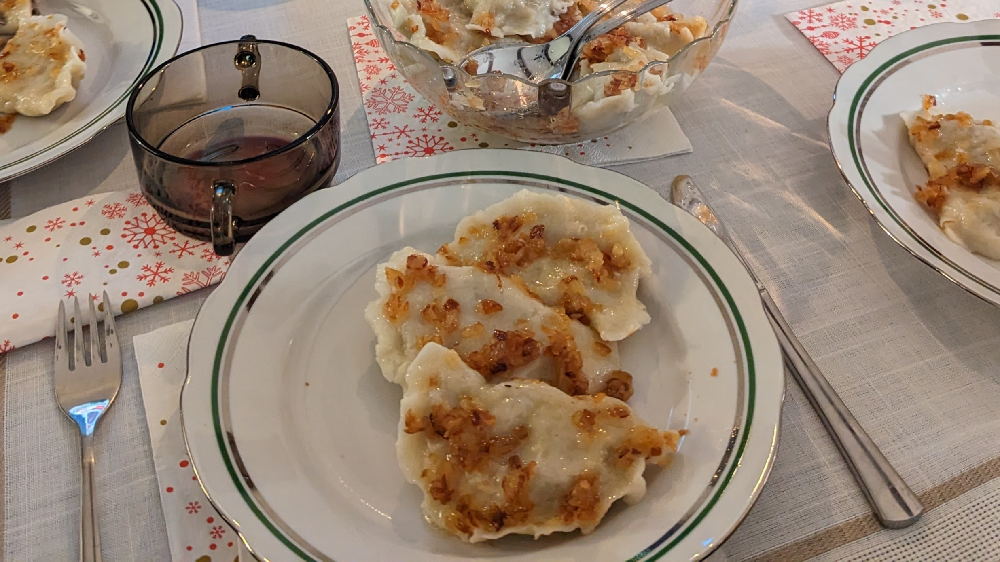

Pierogi

Description
Pierogi are well known Polish dish. They are dumplings with different type of fillings.
Usually served with grease and "skwarki". I'll present a recipe for Pierogi with cabbage and mushrooms popular in Christmas season.
Ingredients
- Dough
- 750g of flour
- Around 250ml of hot water
- Pinch of salt
- One egg
- Two table spoons of oil
- Filling
- 2.5kg of cabbage
- Mirepoix
- 250g of dried mushrooms
- Two or three onions
- Seasoning
- Salt
- Black pepper
- Herbal pepper
- 2 teaspoons of sugar
- Bay leaf
- Allspice
Steps
- Dough
- Sieve the flour
- Add salt
- Pour water while combining gently
- When it cools down add one egg
- Start moulding the dough
- Filing
- Rinse the dried mushrooms
- Soak them through the night
- Boil mushrooms for one hour
- Pour 250ml of water to the pot
- Add mirepoix, cabbage and spices
- Boil till soft (You can add more water just in case)
- After boiling cool it and strain
- Finely chop the boiled ingredients
- Add everything together with the fried onion
- Forming
- Roll the dough
- Cut the round shapes with the glass (It should be 0.5cm thick)
- Put the filling into our shapes
- Form the dumplings
- Boil them in salted water for 3 to 5 minutes depending on the size of the dumplings
- Grease
- Chop the onions in cubes
- Fry them in oil
- At the end of the frying add butter and salt for taste
Enjoy it!